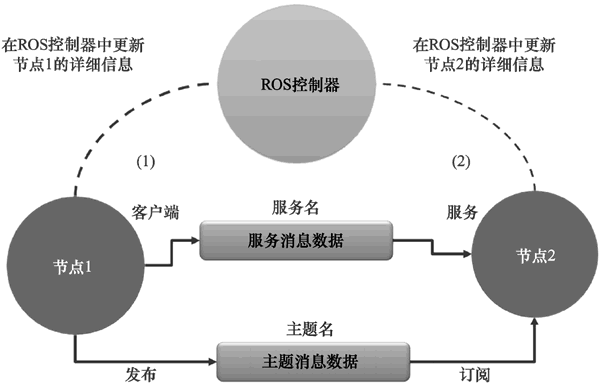

首页 > 编程笔记
ROS机器人操作系统简介（非常详细）
ROS（Robot Operating System）是用于创建机器人应用程序的软件框架，其主要目的是提供可以用于创建机器人应用程序的功能，创建的应用程序也可以被其他机器人再次使用。
ROS 由一系列可以简化机器人软件开发的软件工具、软件库和软件包组成，是 BSD 许可的一个完整的开源项目，可用于研究和商业应用。虽然 ROS 表示机器人操作系统，但它并不是一个真正的操作系统。相反，它是一个提供了真实操作系统功能的元操作系统。
以下是 ROS 提供的主要功能：
ROS 是管道（消息传递）、开发工具、应用功能和生态系统的组合。ROS 中有强大的开发工具，可以调试和可视化机器人数据。ROS 具有内置的机器人应用功能，如机器人导航、定位、绘图、操作等。它们有助于创建强大的机器人应用程序。
图 1 显示了ROS的组成：
图 1 ROS的组成
ROS 计算图中的基本功能包括节点、ROS 控制器、参数服务器、消息和服务：
图 2 显示了在节点和控制器之间，ROS 主题和 ROS 服务的工作流程。
从图 2 可以看到，ROS 控制器位于两个 ROS 节点之间。我们必须记住的一件事是，在启动 ROS 中的任何节点之前，应该先启动 ROS 控制器。ROS 控制器充当节点之间的中介，以交换关于其他 ROS 节点的信息，从而建立通信。
假设节点 1 希望发布名为 /xyz 的主题，消息类型为 abc。它将首先接近 ROS 控制器，说：“我将发布一个名为 /xyz 的主题，消息类型为 abc，并共享其细节。”当另一个节点，比如节点 2，希望订阅消息类型为 abc 的相同主题 /xyz 时，控制器将共享关于节点 1 的信息，并分配一个端口来直接在这两个节点之间启动通信，而不需要与 ROS 控制器通信。
ROS 服务的工作方式与之类似。ROS 控制器类似 DNS 服务器，当第二个节点向第一个节点请求主题或服务时，它可以共享节点的详细信息。ROS 使用的通信协议是 TCPROS（http://wiki.ros.org/ROS/TCPROS），它使用的是标准 TCP/IP 套接字。
ROS 由一系列可以简化机器人软件开发的软件工具、软件库和软件包组成，是 BSD 许可的一个完整的开源项目，可用于研究和商业应用。虽然 ROS 表示机器人操作系统，但它并不是一个真正的操作系统。相反，它是一个提供了真实操作系统功能的元操作系统。
以下是 ROS 提供的主要功能：
- 消息传递接口：这是 ROS 的核心功能，它支持进程间通信。使用这种消息传递功能，ROS 程序可以与其链接的系统进行通信并交换数据。
- 硬件抽象：ROS 具有一定程度的抽象，使开发人员能够创建与机器人无关的应用程序。这类应用程序可以用于任何机器人，因此开发人员只需要关心底层的机器人硬件。
- 软件包管理：把 ROS 节点以软件包形式组织在一起，则称为 ROS 软件包。ROS 软件包由源代码、配置文件、构建文件等组成。我们可以创建包、构建包和安装包。ROS 中有一个构建系统，可以帮助构建这些软件包。ROS 的软件包管理使 ROS 的开发更加系统化和组织化。
- 第三方软件库集成：ROS 框架可与许多第三方软件库集成，如 OpenCV、PCL、OpenNI 等。这有助于开发者在 ROS 中创建各种各样的应用程序。
- 底层设备控制：使用机器人工作时，也可能需要使用底层设备，例如控制 I/O 引脚、通过串口发送数据等设备。这也可以使用 ROS 完成。
- 分布式计算：处理来自机器人传感器的数据所需的计算量非常大。使用 ROS 可以轻松地将计算分配到计算节点集群中。分配计算能力使处理数据的速度比使用单个计算机更快。
- 代码复用：ROS 的主要目标是实现代码复用。代码复用促进了全球研发团队的发展。ROS 的可执行文件叫作节点。这些可执行文件被打包成一个实体，叫作 ROS 软件包。一批软件包集合叫作元软件包，软件包和元软件包都可以共享和分发。
- 语言独立性：ROS 框架可以使用当前流行的编程语言（如 Python、C++ 和 Lisp）。节点可以用任何一种语言来编写，并且可以通过 ROS 框架进行无障碍通信。
- 测试简单：ROS 有一个内置的单元/集成测试框架 rostest，用于测试 ROS 软件包。
- 扩展：ROS 可以扩展到机器人中执行复杂的计算。
- 免费且开源：ROS 的源代码是开放的，并且是完全免费的。ROS 的核心部分，经 BSD 协议许可，可以在商业领域和不开源的产品上复用。
ROS 是管道（消息传递）、开发工具、应用功能和生态系统的组合。ROS 中有强大的开发工具，可以调试和可视化机器人数据。ROS 具有内置的机器人应用功能，如机器人导航、定位、绘图、操作等。它们有助于创建强大的机器人应用程序。
图 1 显示了ROS的组成：
图 1 ROS的组成
ROS框架
ROS 框架主要分成三个层级，分别是 ROS 文件系统、ROS 计算图和 ROS 社区。1) ROS文件系统
ROS 的文件系统主要介绍了硬盘上 ROS 文件的组织形式。其中，我们必须了解的主要有以下几个方面：- 软件包（Package）：ROS 软件包是 ROS 软件框架的独立单元。ROS 软件包可能包含源代码、第三方软件库、配置文件等。ROS 软件包可以复用和共享。
- 软件包清单（Package Manifest）：清单文件（package.xml）列出了软件包的所有详细信息，包括名称、描述、许可信息以及最重要的依赖关系。
- 消息（msg）类型：消息的描述存储在软件包的 msg 文件夹下。ROS 消息是一组通过 ROS 的消息传递系统进行数据发送的数据结构。消息的定义存储在扩展名为 .msg 的文件里。
- 服务（srv）类型：服务的描述使用扩展名 .srv 存储在 srv 文件夹下。该文件定义了 ROS 内服务请求和响应的数据结构。
2) ROS计算图
ROS 的计算图是 ROS 处理数据的一种点对点的网络形式。ROS 计算图中的基本功能包括节点、ROS 控制器、参数服务器、消息和服务：
- 节点（Node）：ROS 节点是使用 ROS 功能处理数据的进程。节点的基本功能是计算。例如，节点可以对激光扫描仪数据进行处理，以检查是否存在碰撞。ROS 节点的编写需要 ROS 客户端库文件（如roscpp和rospy）的支持。
- ROS 控制器（Master）：ROS 节点可以通过名为 ROS 控制器的程序相互连接。此程序提供计算图其他节点的名称、注册和查找信息。如果不运行这个控制器，节点之间将无法相互连接和发送消息。
- 参数服务器（Parameter server）：ROS 参数是静态值，存储在叫作参数服务器的全局位置。所有节点都可以从参数服务器访问这些值。我们甚至可以将参数服务器的范围设置为 private 以访问单个节点，或者设置为 public 以访问所有节点。
- ROS主题（Topic）：ROS 节点使用命名总线（叫作 ROS 主题）彼此通信。数据以消息的形式流经主题。通过主题发送消息称为发布，通过主题接收数据称为订阅。
- 消息（Message）：ROS 消息是一种数据类型，可以由基本数据类型（如整型、浮点型、布尔类型等）组成。ROS 消息流经 ROS 主题。一个主题一次只能发送/接收一种类型的消息。我们可以创建自己的消息定义并通过主题发送它。
- 服务（Service）：我们看到使用 ROS 主题的发布/订阅模型是一种非常灵活的通信模式，这是一种一对多的通信模式，意味着一个主题可以被任意数量的节点订阅。在某些情况下，可能还需要一种请求/应答类型的交互方式，它可以用于分布式系统。这种交互方式可以使用 ROS 服务实现。ROS 服务的工作方式与 ROS 主题类似，因为它们都有消息类型定义。使用该消息定义可以将服务请求发送到另一个提供该服务的节点。服务的结果将作为应答发送。该节点必须等待，直到从另一个节点接收到结果。
- ROS 消息记录包（Bag）：这是一种用于保存和回放 ROS 主题的文件格式。ROS 消息记录包是记录传感器数据和处理数据的重要工具。这些包之后可以用于离线测试算法。
图 2 显示了在节点和控制器之间，ROS 主题和 ROS 服务的工作流程。

图 2 ROS节点和ROS控制器之间的通信
图 2 ROS节点和ROS控制器之间的通信
从图 2 可以看到，ROS 控制器位于两个 ROS 节点之间。我们必须记住的一件事是，在启动 ROS 中的任何节点之前，应该先启动 ROS 控制器。ROS 控制器充当节点之间的中介，以交换关于其他 ROS 节点的信息，从而建立通信。
假设节点 1 希望发布名为 /xyz 的主题，消息类型为 abc。它将首先接近 ROS 控制器，说：“我将发布一个名为 /xyz 的主题，消息类型为 abc，并共享其细节。”当另一个节点，比如节点 2，希望订阅消息类型为 abc 的相同主题 /xyz 时，控制器将共享关于节点 1 的信息，并分配一个端口来直接在这两个节点之间启动通信，而不需要与 ROS 控制器通信。
ROS 服务的工作方式与之类似。ROS 控制器类似 DNS 服务器，当第二个节点向第一个节点请求主题或服务时，它可以共享节点的详细信息。ROS 使用的通信协议是 TCPROS（http://wiki.ros.org/ROS/TCPROS），它使用的是标准 TCP/IP 套接字。
关注公众号「站长严长生」，在手机上阅读所有教程，随时随地都能学习。内含一款搜索神器，免费下载全网书籍和视频。

微信扫码关注公众号